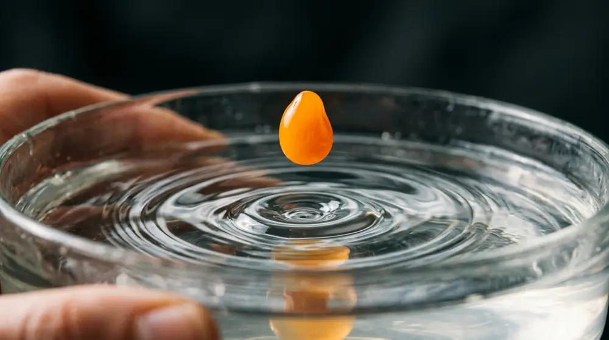
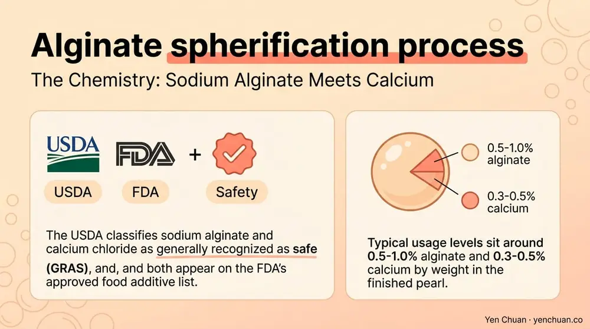
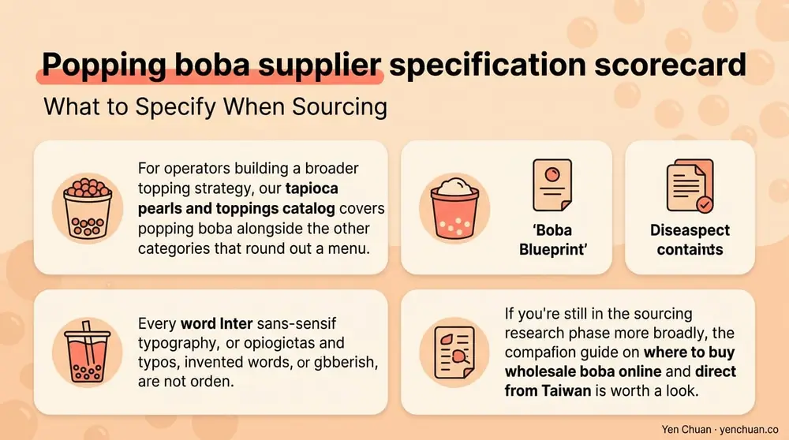

Articles / Business & sourcing
Popping Boba Manufacturing: Alginate Process Guide
2026-04-09 · Technical Guide, Product Spotlight

Original public content from Yen Chuan. Product claims and specifications remain subject to confirmation by the company.
Popping boba looks simple — a juice-filled sphere that bursts in your mouth — but the manufacturing process behind it is one of the more technically demanding corners of the bubble tea supply chain. The pearls rely on spherification, a food-science technique rooted in molecular gastronomy that was adapted to industrial scale in the mid-2000s. For buyers sourcing from a popping boba wholesale supplier, understanding how alginate encapsulation actually works helps you ask the right questions about quality, shelf life, and consistency. This guide walks through the science, the equipment, the pain points that separate good popping boba manufacturers from average ones, and what to specify in a purchase order.
The Chemistry: Sodium Alginate Meets Calcium
Spherification works because of a simple ion-exchange reaction. Sodium alginate — a polysaccharide extracted from brown seaweed, typically Laminaria or Macrocystis — forms a soluble solution in water. When that solution contacts calcium ions, sodium is displaced and calcium cross-links the alginate polymer chains into a gel membrane. The reaction happens within seconds, which is what lets factories produce millions of pearls per shift.
Two techniques dominate industrial popping boba production. Reverse spherification drops a calcium-rich juice mixture into a sodium alginate bath. The membrane forms on the outside while the interior stays liquid. Direct spherification does the opposite — alginate-laced juice drops into a calcium chloride bath. Industrial popping boba is almost always reverse spherified because the membrane stops growing once the sphere leaves the bath, giving a stable burst-in-mouth texture rather than a pearl that keeps gelling until it's solid.
The USDA classifies sodium alginate and calcium chloride as generally recognized as safe (GRAS), and both appear on the FDA's approved food additive list. Typical usage levels sit around 0.5-1.0% alginate and 0.3-0.5% calcium by weight in the finished pearl.

Inside the Production Line
A commercial popping boba line has five core stages. The juice phase combines fruit juice or concentrate, sugar, flavor, color, and a calcium salt — usually calcium lactate or calcium gluconate for flavor neutrality. This mixture is degassed under vacuum to prevent air pockets that would break pearls during the drop.
The alginate bath sits in a stainless-steel tank with controlled temperature (typically 18-22°C), pH (around 5.5-6.5), and continuous gentle agitation to prevent pearls clumping. Above the bath, a multi-nozzle dropper head releases precise droplets — modern lines use servo-controlled peristaltic pumps that deliver pearls within ±0.2 mm diameter tolerance.
Pearls sit in the bath for 90 seconds to 4 minutes depending on target membrane thickness. They're then transferred onto a rinse belt to remove excess alginate, dewatered, and packed in a mild sugar syrup that stabilizes osmotic balance and prevents the membrane from weakening over shelf life.
Quality-focused manufacturers run inline cameras that measure pearl diameter, circularity, and color consistency at rates up to 5,000 pearls per minute. Rejected pearls are diverted before packaging rather than sorted manually downstream.
Flavor Loading and Juice Authenticity
The flavor-carrying liquid inside the pearl is where quality fault lines open up. Low-cost popping boba relies heavily on artificial flavor and high-fructose corn syrup to deliver a punch that survives the production process. Better manufacturers use real fruit juice concentrates or single-strength juice, sometimes blended with natural flavor concentrates to reinforce top notes that would otherwise be lost during pasteurization.
Color is another flag. Natural colors — anthocyanins from black carrot for red, curcumin for yellow, chlorophyll copper complex for green — cost 3-8x more than synthetic dyes but avoid the regulatory headaches of Red 40 and Yellow 5 in markets like the EU and parts of the US. Our popping boba with natural colours line is built around this decision: real juice, natural colors, no artificial additives.
The acidity of the juice matters too. Very low pH (under 3.5) accelerates alginate breakdown over shelf life; juice blends typically target pH 3.8-4.5 for a good flavor-stability trade-off. Passion fruit and lime pearls are the hardest to formulate for that reason.
Shelf Life, Storage, and Failure Modes
A properly manufactured and packed popping pearl has a shelf life of 12 months unrefrigerated, dropping to 3-5 days once the pack is opened and pearls are transferred to an in-store container. The failure modes are all about the membrane.
Syneresis — water leaking out of the gel — leaves pearls floating in a diluted pool and reduces burst intensity. Over-gelling happens if residual calcium inside the pearl keeps cross-linking the membrane; pearls turn rubbery rather than bursting cleanly. Membrane thinning occurs under prolonged low pH or high-temperature storage and causes pearls to rupture prematurely, leaking into the syrup.
Temperature management is the single biggest operational lever. Store sealed pouches at 10-25°C away from direct sunlight. Once opened, refrigerate the working container and discard any pearls that show visible haze, color bleeding, or membrane softness. A boba shop losing 15%+ of popping boba inventory to premature rupture is almost always holding stock too warm or rotating too slowly.
What to Specify When Sourcing
Not every popping boba manufacturer operates at the same tier. When you're evaluating suppliers, these five specifications separate industrial-grade partners from commodity sellers:
| Specification | What to Ask For |
|---|---|
| Pearl diameter | Target + tolerance (e.g., 7 mm ±0.5 mm) |
| Burst pressure | Measured in grams-force, typical range 80-150 gf |
| Juice content | Percent by weight of the finished pearl (30-45% is standard) |
| Color source | Natural vs synthetic, with specific INS numbers |
| Certification | FSSC 22000, BRC, HACCP, and any regional halal/kosher marks |
Ask for a technical data sheet (TDS), not a marketing one-pager. A real manufacturer will share pearl size distribution charts, shelf-life test data, and allergen statements without needing to be chased.
For operators building a broader topping strategy, our tapioca pearls and toppings catalog covers popping boba alongside the other categories that round out a menu. If you're still in the sourcing research phase more broadly, the companion guide on where to buy wholesale boba online and direct from Taiwan is worth a look.

Customization and OEM Capability
Many established popping boba manufacturers offer custom flavor development, private-label packaging, and exclusive color work for brand partners. Typical minimum order quantities sit around 500-1,000 kg per SKU for custom formulations, with 8-12 weeks of R&D lead time before first production.
The R&D cycle covers flavor matching (usually 2-3 rounds of samples), stability testing (accelerated shelf-life at 40°C runs for 4-6 weeks), regulatory review for target markets, and packaging artwork. Brands that treat popping boba as a differentiator — seasonal lychee-rose, limited-run haku peach, co-branded collaborations — build sustained margin advantage over shops relying purely on commodity flavors. Our know your toppings: popping boba primer covers the basics for operators newer to the category.
About Yen Chuan
Yen Chuan has been at the heart of Taiwan's bubble tea industry for over 20 years, supplying premium powders, syrups, tapioca pearls, and tea leaves to thousands of boba shops worldwide. With an in-house R&D lab and a commitment to quality ingredients, Yen Chuan is more than a supplier — we're your partner in the boba business. Our popping boba is produced under FSSC 22000-certified facilities with full natural-color options and documented membrane burst-force specifications — because "it tastes good" is not a technical answer for procurement teams.
Ready to Source Popping Boba?
Looking for a reliable popping boba wholesale supplier with real R&D depth? Browse our popping boba range or contact our team to request samples and technical data sheets — we ship worldwide from Taiwan and support custom formulations from 500 kg.
Authority Citations
- FDA — Food Additive Status List, fda.gov
- USDA — GRAS Substances Database, usda.gov
- Mordor Intelligence — Bubble Tea Market Report 2024, mordorintelligence.com
- International Food Information Council — Alginate Safety and Applications, foodinsight.org
- FSSC 22000 — Food Safety Certification Scheme, fssc.com
Frequently Asked Questions
Q: What is popping boba actually made of? A: Popping boba is a juice-filled sphere held together by a thin sodium alginate gel membrane, formed through a food-science technique called reverse spherification. The membrane is created when calcium ions inside the juice mixture react with alginate in a bath, creating a sphere that bursts when bitten. Typical formulations use 0.5-1% alginate and 0.3-0.5% calcium by weight.
Q: How long does unopened popping boba last? A: Sealed and stored at 10-25°C, commercial popping boba typically has a 12-month shelf life. Once opened and transferred to an in-store container, usable life drops to 3-5 days refrigerated. Temperature and sunlight exposure are the two biggest factors in premature rupture.
Q: Are popping boba ingredients safe and regulated? A: Yes. Sodium alginate and calcium salts used in spherification are both FDA GRAS-listed and widely accepted in the EU, Japan, and most export markets. Reputable popping boba manufacturers hold FSSC 22000, BRC, or HACCP certifications and publish full allergen and additive statements on their technical data sheets.
Q: What's the difference between natural and artificial color popping boba? A: Natural colors come from food sources like black carrot, beetroot, spirulina, or turmeric, while artificial colors are synthetic dyes such as Red 40 or Yellow 5. Natural-color popping boba costs more but avoids regulatory restrictions in the EU and in some US states, and removes the need for front-of-pack color warnings.
Q: What's the typical minimum order for custom popping boba? A: Most popping boba manufacturers set MOQs around 500-1,000 kg per SKU for custom flavor or private-label runs. R&D and approval typically takes 8-12 weeks before first commercial production, covering flavor matching, shelf-life testing, and regulatory review for the target market.